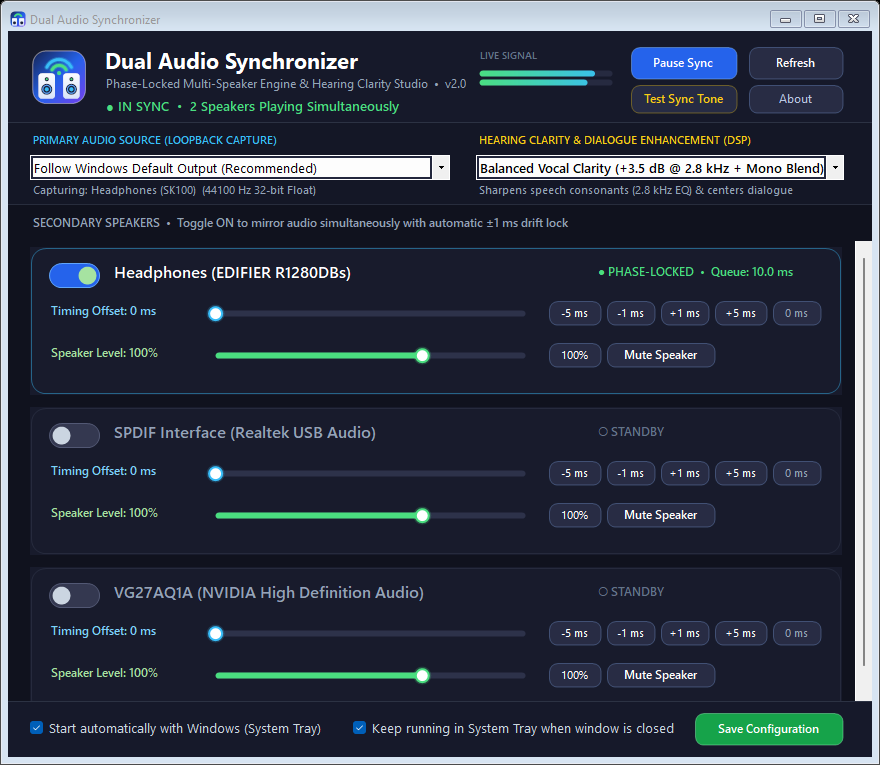

Simultaneous Multi-Speaker Audio
with ±1 ms Active Drift Lock
Play audio through your primary headphones and secondary Bluetooth or wired speakers at the exact same time on Windows—complete with real-time clock-drift correction and built-in 2.8 kHz Vocal Clarity DSP for hard-of-hearing listeners.

Built to Never Drift Out of Sync
Two Bluetooth or USB speakers each run on independent internal crystal clocks. Passive audio mirror utilities inevitably drift apart over minutes—Dual Audio Synchronizer v2.0 actively locks them together.
Active Clock-Drift Controller
Continuously measures secondary WASAPI hardware buffer padding via an exponential moving average pinned to 10.0 ms and applies click-free ±1 frame linear-interpolated resampling whenever clocks diverge.
1 ms Scheduler & Event Loopback
Combines timeBeginPeriod(1) high-resolution kernel scheduling with AUDCLNT_STREAMFLAGS_EVENTCALLBACK to eliminate Windows' default 15.6 ms timer sleep jitter.
2.8 kHz Vocal Clarity & Mono Blend
Pre-configured out of the box for hard-of-hearing listeners with a 2nd-order Biquad Peaking EQ (+3.5 dB / +5.5 dB @ 2.8 kHz), stereo-to-center vocal blend, and a soft-knee tanh peak limiter.
Smart Endpoint Persistence
Tracks devices by both Friendly Name and MMDevice GUID so your speakers automatically reconnect and lock back into sync even if Windows rotates Bluetooth endpoint IDs after power-cycling.
Per-Speaker ±1 ms Timing & Gain
Includes dedicated -5 ms, -1 ms, +1 ms, and +5 ms micro-stepping buttons, 0%–150% independent speaker volume sliders, and a built-in acoustic Sync Test Chime.
Single-Instance System Tray Guard
Protected by a kernel Mutex and IPC wakeup handle so duplicate instances can never clash on startup, running silently in the Windows System Tray with instant one-click restore.